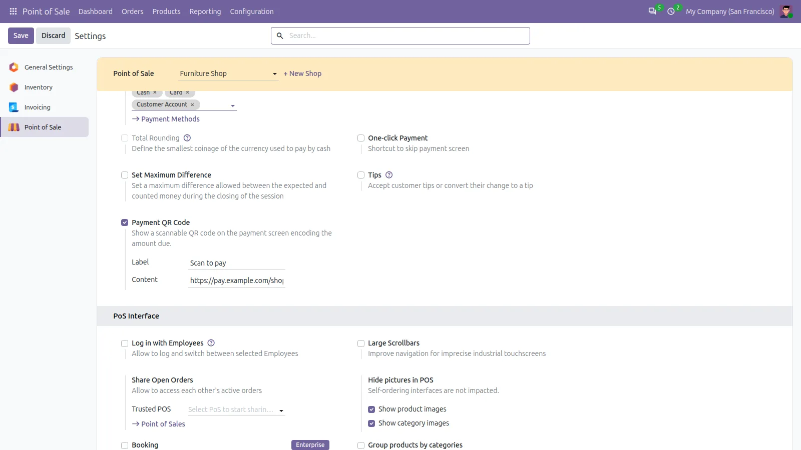
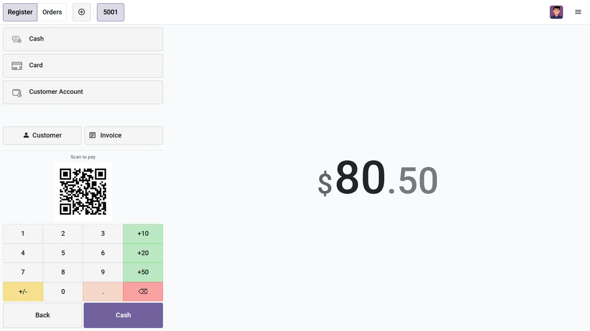

POS QR Payment - QR Code Payment on the Payment Screen
POS QR code with the amount due on the payment screen, built from a payload you configure such as your payment link. Customers scan and pay by phone.
- Price
- $19
- Odoo versions
- 16.0
- 17.0
- 18.0
- 19.0
- 20.0
- Technical name
tamadoo_pos_qr_payment- License
- OPL-1
Odoo 20.0: not listed on the store yet. Ask at tama.odoo@gmail.com.

Text and screenshots below are from the Odoo 20.0 version of this module.
Show a scannable payment QR code on the POS payment screen.
What it does
Display a payment QR code directly on the POS payment screen. The QR encodes the amount due using a payload you configure (for example your payment link), so customers can scan and pay with their phone — no extra terminal required.
Key features
- QR code on the payment screen, generated from the amount due.
- Configurable QR content with an
{amount}placeholder. - Custom label (e.g. "Scan to pay").
- Enable / disable per Point of Sale.
How to use — step by step
1. Configure the QR
Point of Sale → Configuration → Settings → Payment → Payment QR Code.

2. The QR appears on the payment screen

Requirements
- Odoo 20 — Point of Sale (
point_of_sale). - QR codes are drawn by reportlab and need its PNG backend: Odoo's Debian/Ubuntu packages include it, on a pip-based Linux install run
pip install rl-renderPM(Odoo's requirements.txt lists it for Windows only), otherwise the QR code shows as a broken image.
Tamadoo · tama.odoo@gmail.com
Get POS QR Payment
Odoo 20.0: not listed on the store yet. Ask at tama.odoo@gmail.com.
Questions before buying? Write to tama.odoo@gmail.com.